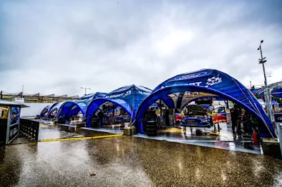
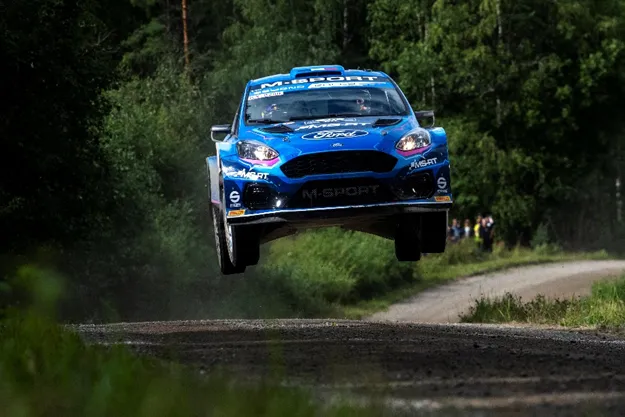
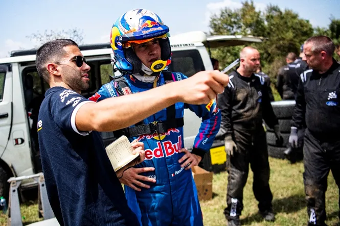
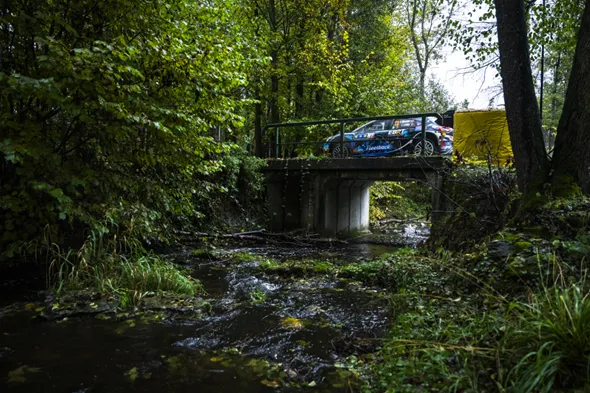
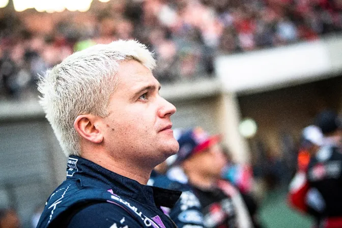
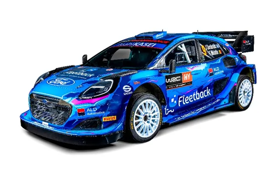
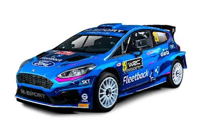

What will M-Sport's lineup look like next year?
M-Sport are in a bit of a pickle for 2024. With Ott Tanak gone, M-Sport are going back to survival mode, not dissimilar to their situation in 2021 and 2022. M-Sport are not going to sign drivers like Mikkelsen, Lappi, Paddon etc etc, they’re going to take a bet on young drivers (preferably with some backing so that they don’t have to spend that much money) and hope they can snatch the odd podium. And M-Sports dilemmas don’t only apply to the main class, but to WRC2 as well. They want to have a driver who is fast and can show that the upgraded Fiesta Rally2 can be competitive in the right hands, in order to sell them to privateers. So, let’s see what M-Sport’s options are for next season.
Adrien Fourmaux is all but confirmed to be in M-Sport’s WRC driver lineup for next year. The Frenchman showed great speed in the Fiesta Rally2 in both gravel and tarmac, was consistent and less crash prone than he was in the past. He deserves a Rally1 program for next year and I am sure he will get it. His outing in Rally Japan is likely to be a dress rehearsal for his 2024 season. So now that we have a seat 99% sure, what about the 2nd seat, or a potential 3rd seat? Let’s start with the driver Fourmaux will be replacing for Japan, Pierre Louis Loubet.

Loubet’s season was a disaster. The Frenchman hoped to build on his solid 2022 season, but instead he went back to his 2021 ways. Loubet had a disaster of a season, suffering from a mix of mechanical problems, and driver errors of his own. Loubet scored points in just 5 out of his 12 outings, and was often at the bottom of the leaderboard. To me he did not show the improvement himself or M-Sport would have hoped for. But against all odds, I am optimistic that he is going to be in a Puma for Monte 2024, whether that is for a part-time or a full-time campaign. He has backing from All Exclusive Car Racing Team, who financed his 2022 and 2023 M-Sport programs, and also helped in financing his 2C campaign too. So, it would make sense for M-Sport to keep Loubet, since he brings money to the team, and also has experience with the Puma Rally1. Let’s see if Loubet can finally find the consistency, he so desperately needs in 2024 with a new co driver.

So, what about the 3rd car? Well, it is almost certain that Gregoire Munster will get some Rally1 outings in the Puma next year. And personally, I am not too annoyed at it. When it was announced that Munster would be getting some outings in the Puma after Serderidis’ retirement I was really annoyed, thinking he would be like Bertelli in terms of speed. And when you compare his speed to Fourmaux who was also in the Fiesta Rally2, you could see my thought process. But, Munster was decent and showed promise in Central Europe, showing that he wouldn’t be a complete waste. And in any case, its better to have an extra car than none. So my prediction is that Munster will have a program going back and forth between the Puma and the Fiesta Rally2.

Alberto Heller has also expressed interest in doing some rallies in a Puma Rally1, but I find it unlikely, I think there is a strong possibility he does Rally Chile, but apart from that I am not sure. As you have noticed, M-Sport don’t have a strong driver for their WRC2 lineup, I’ve praised Munster but he is not a number 1 driver for a WRC2 team, at least not yet. Oliver Solberg is not getting a seat at M-Sport, forget it. Monster and Red Bull clash, so there’s that.

Could
we see Gus Greensmith back in M-Sport colours? It would make perfect sense for
M-Sport. The Dovenby Hall team need someone who is fast enough in a Rally2, so
that they can sell more Fiesta Rally2s, and could also be looking for someone
with money backing to put in the Puma. Add in the fact that Gus has experience
with both cars (granted the Fiesta Rally2 is quite different to its 2023
version), and within the team. And from what I understand, there is no bad
blood between the two sides. It’s a matter of if Greensmith would like to
finance a seat at M-Sport, I am sure if M-Sport run 3 cars then they would like
to have him on board.
So in the end here is my prediction for how M-Sport will lineup in 2024
WRC:
Fourmaux (full-time)
Loubet (Likely full-time, could be part time)
Munster/Heller/Greensmith (part time)

WRC2:
Munster
Greensmith
Creighton (he won JWRC don’t forget)

So,
what do you think?
Who will M-Sport employ for 2024?
@Dimitrisqwerty
All pics are from the Red Bull Content Pool


Comments